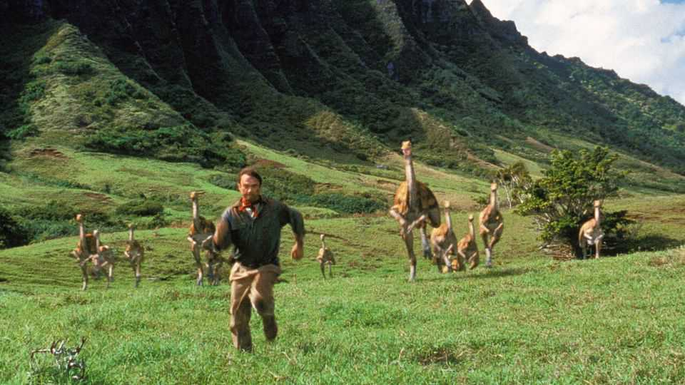

Rock-solid evidence for the origins of birds
Stones in dinosaur stomachs may help understanding of avian evolution

Aug 20th 2026
How do you know what a dinosaur ate? Guts rot away after death, so the details of dinosaur digestion remain obscure. The best indicators are teeth. Sharp, pointed teeth probably ripped chunks of flesh off prey for swallowing whole. Robust grinding surfaces suggest lots of chewing was involved. Yet many dinosaurs belonging to a group called the theropods, which gave rise to birds, lost their teeth altogether and evolved beaks. This has made it hard to work out what they ate and how they digested it.
There is, however, a second clue. Lots of dinosaurs had stones, known as gastroliths, in their stomachs. These are assumed to have assisted with digestion, and thus have their own tales to tell. And modern birds and crocodilians (which are both, like dinosaurs, members of a larger evolutionary group called the archosaurs) often have gastroliths, too.
Takasaki Ryuji at Okayama University of Science, in Japan, decided to investigate. In a study published in Paleobiology, he and his colleagues examined the gastroliths of 46 modern archosaur species (42 birds and four crocodilians) and compared them with those from 16 species of dinosaur.
The birds included herbivores, omnivores and carnivores. The crocodilians were all carnivorous. The shapes of the stones varied. As might be expected, if an animal had a highly muscular stomach (ducks and geese), its gastroliths tended to have been worn into the sorts of rounded shapes displayed by beach pebbles. Weaker stomachs (seabirds and crocodiles) contained more angular stones.
Looking at the dinosaurs, Dr Takasaki and his colleagues found that ornithischians (think Triceratops), a group which their teeth suggest were herbivores, retained angular gastroliths. These creatures, this implies, relied mostly on their jaws to grind up their food, leaving their stomachs to apply merely the finishing touches.
Long-necked sauropods (think Diplodocus) also had angular gastroliths. That is more of a puzzle, for these animals had pencil-like teeth using which, it is assumed, they stripped the leaves off tree branches that less cervically elongated animals were unable to reach. The explanation, Dr Takasaki suspects, is that like those of modern ungulates, sauropods’ stomachs depended mainly on fermentation to break food down.
Stones in the guts of theropods tell yet another story. Tarbosaurus, a hypercarnivore similar to Tyrannosaurus, and similarly endowed with sharp, pointed teeth, had angular gastroliths. However, theropods with beaks (of which science recognises at least four groups) had rounded ones. Indeed, Dr Takasaki saw a clear relation between tooth loss and stone roundness, as the work of grinding up food was transferred from jaws to stomach.
That shift may have helped make possible the evolutionary success of birds. Teeth are heavy, as are the jaw muscles those teeth require to do their job. This puts a lot of weight near an animal’s front. Shifting the job of grinding, and the muscles and hard surfaces involved, to the stomach centralises an animal’s centre of gravity in a way that would make it easier for it to rise from the ground.
Curiously, it is clear from the fossil record that the very earliest birds of all did not have beaks. But the fact that so many of their theropod relatives did, and that birds themselves evolved them at least twice, suggests the transition was easy. It may thus be that part of the secret to taking successfully to the skies was, quite literally, having the stomach for it. ■